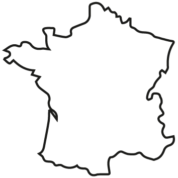

1 million de malades est soigné chaque année grâce au don de sang.
Moi aussi, je veux sauver des vies !
Mais je ne sais pas où me rendre pour donner mon sang.
En complétant une promesse de don, je visualise la carte des collectes et sélectionne celle de
mon choix pour que l’EFS puisse m’inviter à la prochaine date.
45 minutes pour sauver une vie :
Une femme qui perd beaucoup de sang lors de son accouchement. Une personne atteinte d’un cancer et que la chimiothérapie affaiblit. Un enfant souffrant de drépanocytose ou toute autre maladie du sang. Un accidenté de la route.
Je trouve une collecte proche de chez moi
